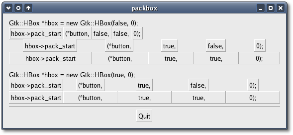

As you can see the insert methods are almost indentical to the pack
methods. The only difference is the 'position'
argument which lets you specify the zero-based position at which to
insert the new widget.
Because Gtk::Box is also a container, you can use Gtk::Container::add()
to pack widgets into a box. If you do, the widgets will be packed the
same as with pack_start() using the default arguments. You should also
use Gtk::Container::remove() to remove widgets from the box.
The
Packbox Example
Setting appropriate packing flags when you pack a widget into a box
lets GTK+ know where you want to place your widgets. It also tells GTK+
how it should do automatic resizing when the parent box is resized.
There are a number of options as to how your widgets can be packed
inside a box. As you can imagine, these options give you quite a bit of
flexibility when and creating and placing widgets. Because of this
flexibility, packing boxes can be confusing at
first. There are a lot of options, and it's not immediately obvious how
they all fit together. In the end, however, there are basically five
different styles.
The header file for the Packbox example is <packbox.hh>:
#include
<xfc/main.hh>
#include <xfc/gtk/box.hh>
#include <xfc/gtk/window.hh>
using namespace Xfc;
class PackBox : public
Gtk::HBox
{
public:
PackBox(bool
homogeneous, int spacing, bool expand, bool
fill, unsigned int padding);
~PackBox();
};
class PackBoxWindow : public Gtk::Window
{
public:
PackBoxWindow(int
which);
~PackBoxWindow();
void
example_1(Gtk::VBox *vbox);
void
example_2(Gtk::VBox *vbox);
void
example_3(Gtk::VBox *vbox);
};
and the source file is <packbox.cc>:
#include
"packbox.hh"
#include <xfc/gtk/button.hh>
#include <xfc/gtk/label.hh>
#include <xfc/gtk/separator.hh>
#include <cstdio>
// PackBox
PackBox::PackBox(bool homogeneous, int spacing, bool
expand, bool fill, unsigned
int padding)
: Gtk::HBox(homogeneous, spacing)
{
// Make a new hbox
filled with button-labels. Arguments for the variables we're interested
// are passed in to this constructor. We do not show
the box, but do show everything inside.
// Create a series of buttons with the appropriate
settings
Gtk::Button *button = new
Gtk::Button("hbox->pack_start");
pack_start(*button, expand, fill, padding);
button->show();
button = new
Gtk::Button("(*button,");
pack_start(*button, expand, fill, padding);
button->show();
// Create a button
with
the label depending on the value of expand
if (expand)
button = new
Gtk::Button("true,");
else
button = new
Gtk::Button("false,");
pack_start(*button, expand, fill, padding);
button->show();
// This is the
same as
the button creation for "expand" above, but uses the shorthand form.
button = new
Gtk::Button(fill ? "true," : "false,");
pack_start(*button, expand, fill, padding);
button->show();
String s = String::format("%d);", padding);
button = new
Gtk::Button(s);
pack_start(*button, expand, fill, padding);
button->show();
}
PackBox::~PackBox()
{
}
// PackBoxWindow
PackBoxWindow::PackBoxWindow(int which)
{
set_border_width(10);
// We create a
vertical
box (vbox) to pack the horizontal boxes into. This allows us to stack
// the horizontal boxes filled with buttons one on
top of the other in this vbox.
Gtk::VBox *vbox = new Gtk::VBox;
// Which example
to show.
switch (which)
{
case 1:
example_1(vbox);
break;
case 2:
example_2(vbox);
break;
case 3:
example_3(vbox);
}
// Create another
new
hbox; remember we can use as many as we need!
Gtk::HBox *quitbox = new Gtk::HBox;
// Our quit button.
Gtk::Button *button = new Gtk::Button("Quit");
// Connect the
signal to
terminate the program when the button is clicked.
button->signal_clicked().connect(slot(this,
&PackBoxWindow::dispose));
// Pack the button
into
the quitbox. The last 3 arguments to Gtk::Box::pack_start are: expand,
fill, padding.
quitbox->pack_start(*button,
true,
false);
// pack the
quitbox into
the vbox (box1)
vbox->pack_start(*quitbox,
false,
false);
// Pack the vbox
(box1)
which now contains all our widgets, into the main window.
add(*vbox);
// And show
everything
left
button->show();
quitbox->show();
vbox->show();
// Showing the
window
last so everything pops up at once.
show();
}
PackBoxWindow::~PackBoxWindow()
{
}
void
PackBoxWindow::example_1(Gtk::VBox *vbox)
{
// Create a new
label.
Gtk::Label *label = new Gtk::Label("Gtk::HBox *hbox = new
Gtk::HBox(false, 0);");
// Align the label
to
the left side.
label->set_alignment(0, 0);
// Pack the label
into
the vertical box (vbox). Remember that widgets added to a vbox
// will be packed one on top of the other in order.
vbox->pack_start(*label,
false,
false);
// Show the label
label->show();
// Create a box -
homogeneous = false, spacing = 0, expand = false, fill = false, padding
= 0
PackBox *box = new
PackBox(false, 0, false, false, 0);
vbox->pack_start(*box, false, false);
box->show();
// Call our
PackBox
constructor - homogeneous = false, spacing = 0, expand = true, fill =
false, padding = 0
box = new
PackBox(false, 0, true, false, 0);
vbox->pack_start(*box, false, false);
box->show();
// Args are:
homogeneous, spacing, expand, fill, padding
box = new
PackBox(false, 0, true, true, 0);
vbox->pack_start(*box, false, false);
box->show();
// Creates a
separator,
we'll learn more about these later, but they are quite simple.
Gtk::HSeparator *separator = new Gtk::HSeparator;
// Pack the
separator
into the vbox. Remember each of these widgets is being packed into a
vbox,
// so they'll be stacked vertically.
vbox->pack_start(*separator,
false,
true, 5);
separator->show();
// Create another
new
label, and show it.
label = new
Gtk::Label("Gtk::HBox *hbox = new Gtk::HBox(true, 0);");
label->set_alignment(0, 0);
vbox->pack_start(*label, false, false);
label->show();
// Args are:
homogeneous, spacing, expand, fill, padding
box = new
PackBox(true, 0, true, false, 0);
vbox->pack_start(*box, false, false);
box->show();
// Args are:
homogeneous, spacing, expand, fill, padding
box = new
PackBox(true, 0, true, true, 0);
vbox->pack_start(*box, false, false);
box->show();
// Another new
separator.
separator = new
Gtk::HSeparator;
// The last 3
arguments
to Gtk::Box::pack_start are: expand, fill, padding.
vbox->pack_start(*separator,
false,
true, 5);
separator->show();
}
void
PackBoxWindow::example_2(Gtk::VBox *vbox)
{
// Create a new
label.
Gtk::Label *label = new Gtk::Label("Gtk::HBox *hbox = new
Gtk::HBox(false, 10);");
label->set_alignment(0, 0);
vbox->pack_start(*label, false, false);
label->show();
// Args are:
homogeneous, spacing, expand, fill, padding
PackBox *box = new
PackBox(false, 10, true, false, 0);
vbox->pack_start(*box, false, false);
box->show();
// Args are:
homogeneous, spacing, expand, fill, padding
box = new
PackBox(false, 10, true, true, 0);
vbox->pack_start(* box, false, false);
box->show();
Gtk::HSeparator *separator = new
Gtk::HSeparator;
// The last 3
arguments
to Gtk::Box::pack_start are: expand, fill, padding.
vbox->pack_start(*separator,
false,
true, 5);
separator->show();
label = new
Gtk::Label("Gtk::HBox *hbox = new Gtk::HBox(false, 0);");
label->set_alignment(0, 0);
vbox->pack_start(*label, false, false);
label->show();
// Args are:
homogeneous, spacing, expand, fill, padding
box = new
PackBox(false, 0, true, false, 10);
vbox->pack_start(*box, false, false);
box->show();
// Args are:
homogeneous, spacing, expand, fill, padding
box = new
PackBox(false, 0, true, true, 10);
vbox->pack_start(*box, false, false);
box->show();
separator = new Gtk::HSeparator;
// The last 3
arguments
to Gtk::Box::pack_start are: expand, fill, padding.
vbox->pack_start(*separator,false,
true, 5);
separator->show();
}
void
PackBoxWindow::example_3(Gtk::VBox *vbox)
{
// This
demonstrates the
ability to use Gtk::Box::pack_end() to right justify widgets.
// First, we create a label as before.
Gtk::Label *label = new Gtk::Label("Gtk::HBox *hbox = new
Gtk::HBox(false, 0);");
label->set_alignment(0, 0);
vbox->pack_start(*label, false, false);
label->show();
// Then we create
a new
box.
PackBox *box = new
PackBox(false, 0, false, false, 0);
// Create the
label that
will be put at the end.
label = new
Gtk::Label("end");
// Pack it using
Gtk::Box::pack_end(), so it is put on the right
// side of the hbox created in the make_box() call.
box->pack_end(*label, false,
false);
// Show the label.
label->show();
// Pack box into
vbox
vbox->pack_start(*box, false,
false);
box->show();
// A separator for
the
bottom.
Gtk::HSeparator *separator = new Gtk::HSeparator;
// This explicitly
sets
the separator to 400 pixels wide by 5 pixels high. This is so the hbox
we created
// will also be 400 pixels wide, and the "end" label
will be separated from the other labels in the hbox.
// Otherwise, all the widgets in the hbox would be
packed as close together as possible.
separator->set_size_request(400, 5);
// pack the
separator
into the vbox (box1) created near the start of the constructor
vbox->pack_start(*separator,
false,
true, 5);
separator->show();
}
int main (int
argc, char *argv[])
{
using namespace Main;
init(&argc, &argv);
if (argc != 2)
{
fprintf (stderr, "usage: packbox
num, where num is 1, 2, or 3.\n");
//
This just does cleanup in GTK and exits with an exit status of 1.
exit (1);
}
int which =
atoi(argv[1]);
PackBoxWindow window(which);
window.signal_destroy().connect(sigc::ptr_fun(&Xfc::Main::quit));
run();
return 0;
}
Compiling Packbox
If you compiled and installed XFC yourself, you will find the source
code for Packbox in the
<examples/howto/packbox> source directory along with a Makefile. If
XFC came pre-installed, or you installed it from an RPM package, you
will
find the source code in the
</usr/share/doc/xfcui-X.X/examples/howto/packbox> subdirectory. In
this case you will have to create the Makefile yourself (replace X.X
with the
version number of the libXFCui library you have installed).
To create a Makefile for Packbox, add the following lines to a new text
file
and save it using the name "Makefile":
CC = g++
CFLAGS = -Wall -O2
packbox: packbox.cc packbox.hh
$(CC) packbox.cc -o packbox $(CFLAGS) `pkg-config
xfcui-X.X --cflags --libs`
clean:
rm -f *.o packbox
If you cut and paste these lines make sure the whitespace before $(CC)
and rm is a tab character. Packbox
can display three
different main windows, depending on the command line option passed: 1,
2 or 3. Using different flags, each window displays several rows of
buttons, each row packed into a
separate box. The button text on each button in a row corresponds to
the value the button sets in the call to the pack_start(). When
you
compile and run this program with the value 1, you will see the
following window appear:

The source code is commented it fairly well so you shouldn't have
any problems following it. Try running the program with the value 2 and
then 3, and resize each window to see how the button widgets in a row
get resized.